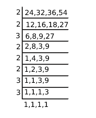

The least number which when incremented by 5 is divisible by each one of 24,32,36 and 54 is?
Let the number be x then x+5 is the number which is divisible by 24,32,36 and 54 Now we need to find LCM of given number and subtract 5 from result then we will get LCM of 24,32,36 and 54 is  LCM = 2 5 × 3 3= 864 x+5 =864 x = 864 − 5 x = 859.